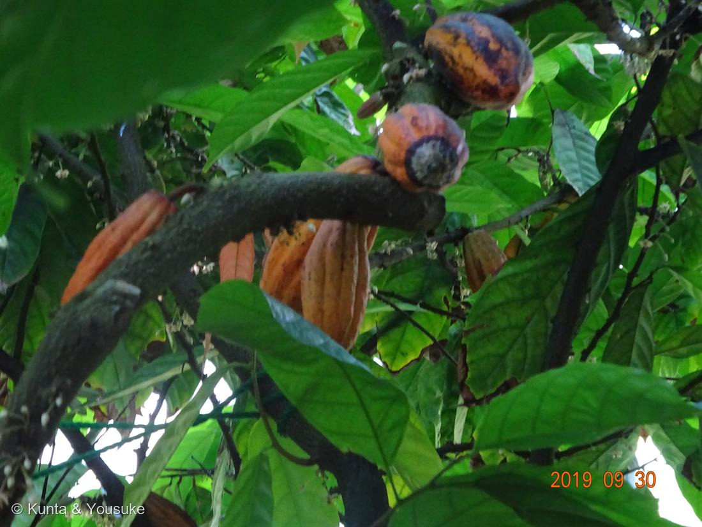
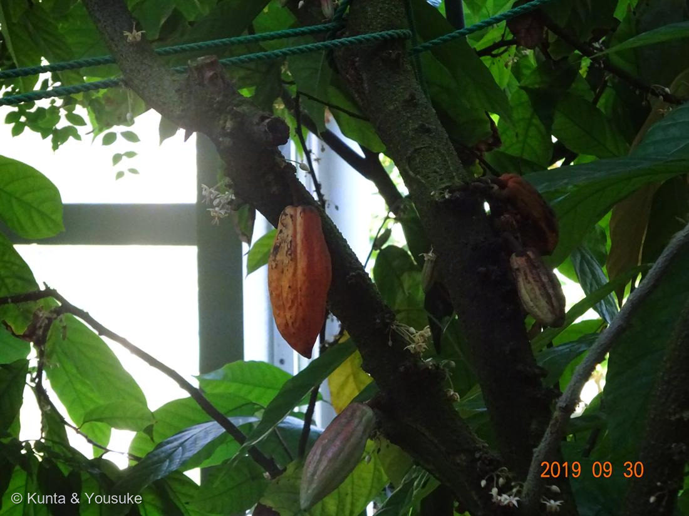

地図を読み込んでいるよ…
🔍 写真も地図も、押しているあいだ拡大して見られるよ（スマホは指を置いてすこし待ってね）。
🌍 の地図＝この子がもともと自生している場所を緑に。中南米（アマゾン〜中米）の熱帯雨林。
⭐アマゾンの熱帯雨林の木。チョコレートは、この地図の中から来たんだよ。
⚠ 地図は国（日本と中国だけ県・省）までしか塗れないから、ほんとうの分布より広く見えていることがあるよ。地図はだいたいの場所。正確なところは、上の文を見てね。
カカオ（加加阿）
Theobroma cacao L.
別名 · ココアノキ／チョコレートの木 ／ 旧アオギリ科
アオイ科 · Malvaceae（カカオ属）── 003 スイレンボク・038 フヨウと同じ科
燻太さんの言葉「幹にでっかいラグビーボール？ 焙煎して砕くだけでもいい香り。でも食べすぎ注意。神の食べ物」……ヒントが、ぜんぶ当たり
名前と学名の由来 ── 「神の食べ物」二人目
- ⭐Theobroma（テオブロマ）＝ギリシャ語で「神（theos）の食べ物（broma）」。リンネが名づけた。cacao は、アステカのナワトル語 cacahuatl から。
- ⭐064 カキ（Diospyros＝「神の穀物・神の食べ物」）に続いて、“神の食べ物”二人目。→ 燻太さんの「神の食べ物って言われる植物、意外と多いのかな？」の答え＝うん、意外といる（一言メモに続く）。
- アオイ科（旧アオギリ科）＝003 スイレンボク・038 フヨウと同じ科。仲間にワタ・オクラ・ドリアン・コーラ（コーラ飲料）も。
- 熱帯雨林の木で、高い気温と湿度が要る＝日本では植物園の温室でしか会えない（この写真も温室。窓と緑のロープが写ってる）。
⭐⭐⭐ 燻太さんの「幹にラグビーボール」＝幹生果（cauliflory）
- ⭐カカオは、花も実も、枝先ではなく「幹や太い古枝から直接」出る＝幹生花・幹生果（cauliflory）。
- 白い径3cmほどの花が、幹に房状にびっしり（写真②で、幹の樹皮に直接ついた白い小花が見える）→ 受粉すると、ラグビーボール状の大きなポッド（15〜30cm）が幹からぶら下がる（＝燻太さんの「でっかいラグビーボール」！）。緑→黄→橙→赤紫と、品種で色さまざま。
- ⭐なぜ幹に？——うっそうとした熱帯林の中で、幹を歩きまわる小さな送粉者に合わせ、また重い実を、丈夫な古い幹で支えるため、と考えられる。
- ⭐花粉を運ぶのは、ハチではなく、体長1〜2mmの小さな「ヌカカ（糠蚊）」の仲間とされる＝小さな花に、小さな虫。だから受粉率が低く、実際にポッドになるのはごく一部。
⭐ チョコレートになるまで（燻太さんの「焙煎して砕く」）
- ポッドの中には、白いパルプ（果肉）に包まれた種子＝カカオ豆が30〜40粒。種子は脂肪ぶんが40〜50%（＝カカオバター）。
- ⭐豆をパルプごと1週間ほど「発酵」（ここで、チョコの香りのもとが生まれる）→ 乾燥 → 焙煎して砕く（カカオニブ） → すりつぶす（カカオマス）。⭐燻太さんの「焙煎して砕いただけでも、いい香りと豊かな風味」は、まさにこのカカオニブ。
- ⚠苦味・風味の主役は テオブロミン（カフェインの仲間のアルカロイド）＋カフェイン。⭐「食べすぎ注意」も正しい：⚠テオブロミンは、犬・猫には毒（代謝できず中毒＝チョコを絶対に与えない）。人も大量は避ける。
昔からの暮らし
- ⭐古代マヤ・アステカでは、カカオは神聖な飲み物（ショコラトル）であり、通貨でもあった。⭐紀元前1100年代の壺のかけらから、すでにテオブロミンとカフェインが検出されている＝3000年以上の付き合い。
- 「神の食べ物」の名も、この“神聖なごちそう”という歴史から。